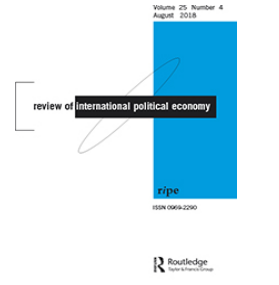
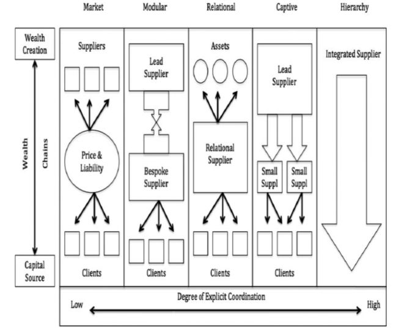
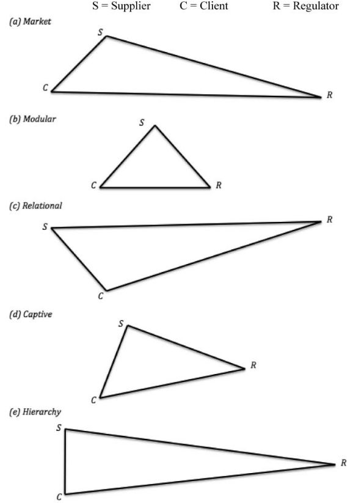
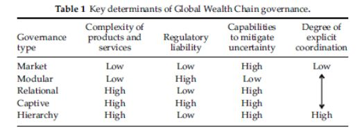

收录于合集

简 介
【原题】 The governance of global chains
【作者】 Leonard Seabrooke： 哥本哈根商学院商业和政治系国际政治经济学和经济社会学教授，挪威研究所国际事务部研究教授。
Duncan Wigan ：哥本哈根商学院商业与政治系国际政治经济学副教授。他和伦纳德·西布洛克合著了《全球税收之战：治理企业与精英财富的斗争》。也与 Seabrooke 合编《全球财富链：管理世界经济中的资产》(Oxford，2017)。
【来源 】 Review of International Political Economy, 2017,Vol. 24,
No. 1, 1–29
【期刊介绍】

Review of International Political Economy是国际政治经济学双月一次的学术期刊，成立于1994年，由劳特利奇出版社（专门从事人文以及科学学科的学术书籍，期刊以及各种在线资源的出版工作）出版。据“期刊引用”报道，该杂志2017年的影响因子为2.532。
【 期刊网址 】
https://www.tandfonline.com/action/showAxaArticles?journalCode=rrip20
【编译】 褚峰熠
【校对】 陈丽、杨艺华
【目录】
1.引言
2.专业化、多样化、网络化
3.全球财富链中的管理类型
4.全球财富链管理理论
5.未来的研究议程
核心观点
本文在全球财富链如何被创造、维持和管理方面，提出了一个理论框架。基于全球价值链方面的国际政治经济学、经济地理学，以及金融学、制度经济中的法律、市场中网络动态的经济科学方面的知识，作者在探究全球财富链如何形成和改变时，坚持强调三个变量：（ 1）交易的复杂性；（2）监管的责任；（3）全球价值链中供应商对产品的创新生产能力。作者重点区分了五种管理全球财富链的类型——市场式、模块型、相关型、领导型、等级制。最后对全球财富链的五种类型的混合体进行简单的审查，说明此框架的潜在发展力。
1.专业化、多样化、网络化
前人对全球价值链的研究有效地辨别了市场过程的类型，从金融和法律学科角度强调了财富链的制度基础及产品供应的驱动力，而经济社会学告诉我们行为者如何挑选产品。基于此使用三条理论标准：（1）供应商和顾客之间实力的不对等及交易程度的负责程度；（2）制度形式方面，金融和法律领域创新的激励因素，包括多样性和专门化的动力；（3）根据供应商和客户间在市场部分的关系的原因，以及什么样的社会与经济的关系以特殊的方式加固了财富链。
2.全球财富链中的管理类型
国际政治经济学致力于“离岸世界”的结构性因素，其重点是将主权商业化。而离岸金融是作为表达资本的特殊性和国际化的载体。第二类研究“离岸世界”的文献调查在监管和市场过程中的行为者。在此前文献的基础上，本文进一步充实了全球财富链的概念。为了做到这一点，我们直接从Gereffi，Humphrey和Sturgin提出的全球价值链类型中汲取经验。
价值链类型建立在“纯粹的”市场和公司内部的等级体系的概念基础上，网络关系被描述为模块化、关系性和封闭性。 市场价值链是指信息容易传播、交易几乎没有明确协调的情况。模块型价值链发生于以通用机器的形式按客户规格提供产品。关系型价值链由正在供应的东西中复杂的相互作用和高度的特异性组成。领导型价值链指的是小供应商依赖较大供应商的情况。等级制价值链的特点是纵向一体化、管理控制水平高。 这些类型的价值链管理为这文献提供了框架。我们将这五种类型价值链应用于对财富链的研究。五种财富链类型不是筒仓式的，而是可以相互作用的。全球财富链的治理类型如下：
(1) 在既定的法律制度中，市场式财富链通过较低复杂程度的距离产生。在价格和容量上竞争中，产品可以从多个供应商获得。
(2) 模块型财富链在完善的金融和法律环境中提供定制的服务和产品，限制了供应商和客户的灵活性。
(3) 关系型财富链涉及复杂的隐性信息的交换，需要非常明确的协调。由于在威望和地位作用下，管理需要牢固的信任关系，这使得转换成本很高。
(4) 当主导的供应商通过法律机构和金融技术主导较小的供应商时，就会出现领导型财富链。客户的选择受到小供应商所能提供的范围的限制，反过来又受到主导的供应商的限制。
(5) 等级制财富链是垂直一体的。高级管理层如首席财务干事，实行高度控制。客户和供应商在复杂的交易上高度一体、紧密协调。
图1显示了上述财富链的五种类型。在资金转移方面，从源头促进财富的创造和保护上，展示了金融产品和服务的主要供应商、次要供应商、客户及其基本关系。我们还注意到，资本通过财富创造机制从资本来源流出，然后又流回。此外，当我们从图的左方向右方移动时，对这些不同形式的管理的协调变得更加复杂和明确。

图1
3.全球财富链中的管理类型
我们对全球财富链的概念与Gereffi、Humphrey和Sturgin的价值链类型有许多相似之处，但也包含了重要的不同之处。上述三位作者提供了一个基于以下三个因素的全球价值链治理理论： 为维持交易所产生的信息的复杂性、各方进行交易的能力、潜在供应商满足交易要求的能力。 然而，将这一思想应用于全球财富链时，许多活动显然是为了避免第三方的介入。我们以监管责任为重点，取代了将法律条文作为区分“链”的手段。我们明确指出，责任是通过多方管辖在监管及干预方面的视角来评估的，需要两个或更多行为者、或超国家或国际组织之间的互动，也就是双边和多边协调问题。提供产品和服务的能力较少地与满足交易需求的能力相关，而更多是关于缓解挑战以应对交易状态不确定的内容。这些因素导致在财富链管理中考虑下列因素：
(A)供应商为满足客户要求而提供的产品或服务的信息和知识转让的复杂性；
(B)交易涉及的监管责任和多方管辖在监管及干预方面的容易程度；
(C)供应商创造解决办法的能力（以减轻监管机构对产品或服务地位的挑战）。
这三个因素解释了全球财富链管理的巨大差异，以及在职能和制度形式上存在差异的原因。下面是关于全球财富链治理中供应商、客户和监管机构之间信息不对称的一系列说明。这三个不同点之间线段的长度代表了这些行为者之间信息的不透明程度。信息不对称为创新和保护免受监管提供了来源。

图2
注：
全球财富链治理中的信息不对称
S=供应商；C=客户；R=监管机构
图2(A)，客户和供应商都对产品所提供的内容和双方所需的信息有很好的了解。其中，信息不对称是客户和监管机构之间的信息不对称。供应商与监管机构之间的距离小于客户与监管机构之间的距离。也就是说在此类形式中，客户的真实身份有所隐藏，是逃税活动的重点。因此，供应商充当客户和监管机构之间的缓冲，这是被允许存在离岸活动的法律所纵容的。在这个系统中“坏事”被发现的主要方式是有一个有客户列表的告密者。然而，要求供应商重新安置所有权或资产主体的合同条款可能允许供应商减少这种挑战。
图2(B)代表信息不对称较少在模块型中出现，因为这是一个活跃、规范的市场，有着明确的反洗钱立法和对收入来源报告的要求。模块式的全球财富链通常是由国家中产阶级和跨国及侨民社区中的“大众富人”的既定形式。对这种财富链的管理多由于缺乏政治意愿，而非财富链中各行为者互动中缺乏所需的能力。
在图2(C)所示的关系型财富链中，最大的信息不对称是供应商和监管者之间的信息不对称，由于供应商与客户之间的关系是即使客户受到审查，也要确保客户的财富不会被监管机构所触及。例如，美国外科医生在库克群岛有一个资产保护信托基金，为确保即使监管机构掌握了一些信息，当他被起诉或离婚时，资产不会被监管者没收。为了获取客户的财富，监管机构(或客户的妻子)需要支付非常高的费用才能在库克群岛上法庭，这是通过与供应商的协议将其主权商业化的做法。
图2(D)的领导型财富链，显示出比模块形式更大的信息不对称，但也比其他形式更少。这是是与国内司法管辖相联系的，监管机构可以试图密切关注正在发生的事情。例如，四大会计师事务所(供应商)和公司(客户)之间的关系是避免和尽量减少公司税。监管机构有明晰的信息说明这是如何发生的以及可能造成的收入损失，客户和供应商之间有明确的沟通渠道以分享他们的需求信息。供应商也经常与监管机构联系，为监管机构和供应商提供专业知识和最佳做法。领头供应商主导行业和市场，并为较小的供应商提供专业知识和技术。在此例中，监管机构与客户的距离比供应商更远，因为供应商提供的大部分服务是为客户的活动提供专业和合法的理由。
图2(E)等级制财富链显示了供应商和客户之间的短距离和低信息不对称，而在客户和监管者、供应商和监管者之间则有着明显的信息不对称。这里的一个关键原因是，客户和供应商之间的关系往往是“内部”的而且紧密相关。他们在市场中的支配地位意味着金融和法律创新的步伐可以加快，这是在优势信息共享的帮助下进行的。这一创新试图掩盖流向监管机构的信息，因为监管机构几乎没有能力跟上创新的步伐，也没有能力了解客户- 供应商动态的错综复杂之处。它们的财富链在为市场提供产品和创造产品方面与其价值链类型非常不同。
决定客户、供应商和监管机构之间信息不对称的五种全球财富链类型和三个变量列于下表1。只有模块型的管理在减少不确定性方面的能力很低。模块型和领导型是监管责任高的唯一类型，因为有一个基于制度的强有力的监管机构。而相较而言，市场式和关系型则可以依赖于不露面的合同或牢固的信任关系，且不经传统金融中介机构而完成交易。

表1
当我们沿着表中的右侧纵向向下移动时，明显的协调的程度就会增加。比如，订购一家空壳公司可以直接在网上完成而不必大惊小怪；购买大面额票据也是一项简单的市场交易。在模块型管理形式中，客户只会得到一个可以协助他们处理国际税务问题的私人银行家，只有一旦他们的投资超过了高收入的财富门槛。与信托和产业规划师或资产保护信托打交道的家庭甚至有更多的钱来支付高度定制的关系服务。领导型的客户和供应商从事一系列复杂的交易，以创造财富链，且他们严重依赖于来自特定主要公司的专业人员和专家。与主要公司有联系的专业人士对维持他们的专家社区有强烈的兴趣，因为他们限制了关于什么是可以管理的辩论的条件，向他们提出挑战的维权人士被迫以自己的方式解决这些问题。而等级制财富链拥有极其复杂的管理系统，以确保监管机构无法充分追踪定价异常以及避税和逃税行为。
4.未来的研究议程
全球财富链的五种类型并非筒仓式，而是经常混合在一起。对目前运作中不同的财富链进行简单的审查，可以说明此框架的潜在牵引力以及我们认定为条件因素的动力的显著特征。在此，简要介绍了等级制与关系型混合的全球财富链、模块型与领导型混合的全球财富链及市场与关系型混合的全球财富链。
作者认为，对全球财富链的分析对于理解生产和金融一体化至关重要。全球财富链与全球价值链是阴阳两面，全球价值链可以通过交易的复杂性、隐含的监管责任和供应商提供某些金融工具的能力来理解。本文则概述了全球财富链的五种类型：市场、模块型、关系型、领导型和等级制。这些类型往往包含混合的公司、团体和个人从事创新形式的多方管理财富的创造和保护活动。今后可以利用这些类型来研究和思考全球财富链是如何联系起来的，包括确定所涉及的行为者和组织类型，以及允许它们存在的过程类型。最后，作者认为，对全球财富链的分析不仅对于理解金融如何变化十分重要，而且对于理解现代资本主义中金融和生产的变化也至关重要。
*点击左下角“ 阅读原文 ”获取原文pdf版
更多阅读

国政学人 （ID：guozhengxueren)
为方便学人及时阅读高质量文章
别忘把国政学人设置 星标 哦~